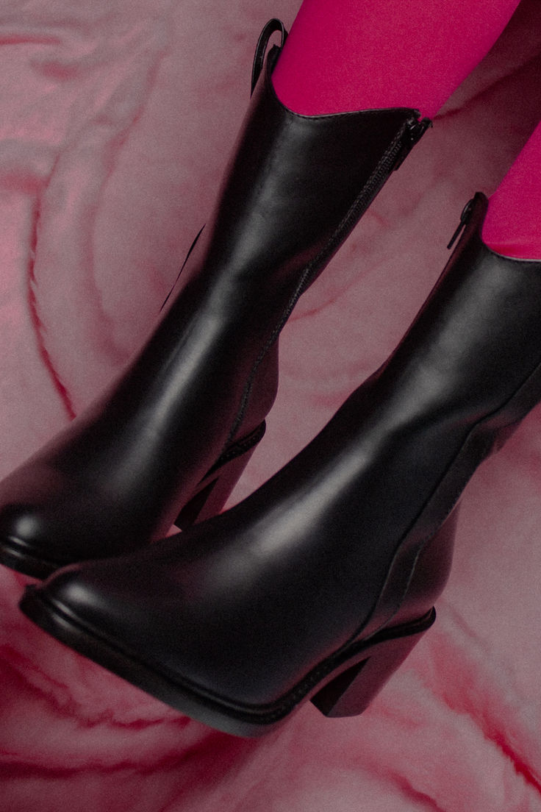

| Recordar los diseños planos y de plástico que usábamos de niñas, hasta aquellos de tacón aguja y pulsera que acompañan conjuntos elegantes. | ||
| Las botas ya no están reservadas para el frío, ahora son un statement del armario y estarán de moda durante la temporada estival. |  | |
| Colores eléctricos, suelas planas, con acabado de piel y de ante, así son algunas de las zapatillas más atractivas que no querrás dejar de usar en la estación. | ||
| Desde los zapatos transparentes hasta las bailarinas que acompañarán la tendencia balletcore. Estos son los diseños obsesión de la siguiente temporada. |